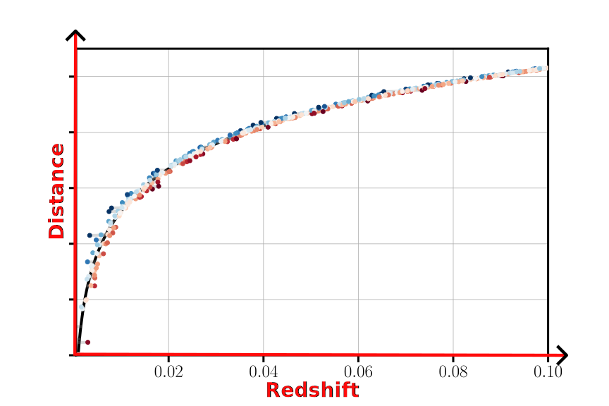
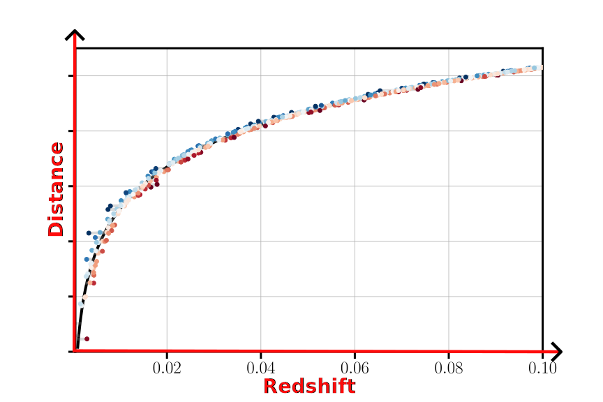
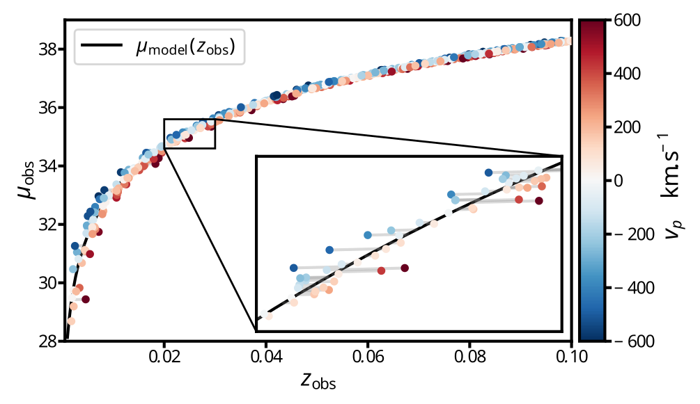

SNe Ia growth-rate measurements with Rubin-LSST simulations: intrinsic scatter systematics
B. Carreres, R. Chen, E. Peterson, D. Scolnic, D. Rosselli, C. Ravoux et al.

\(f\sigma_8\) as a probe for general relativity
Structure evolution:
Dark energy vs Gravity
Density contrast: $\delta(\mathbf{x}) = \frac{\rho(\mathbf{x})}{\bar{\rho}} - 1$
$\sigma_8$ : fluctuation over sphere of
8 Mpc.$h^{-1}$ radius
$\delta(\mathbf{x}) = \sigma_8 \tilde{\delta}(\mathbf{x})$
Velocities are linked to density through the continuity equation:
$\nabla.v(\mathbf{x}) \propto f\sigma_8 \tilde{\delta}(\mathbf{x})$
where $f \equiv$ growth rate
General Relativity + $\Lambda$CDM:
$f \simeq \Omega_m^\gamma$
with $\gamma \simeq 0.55$
Image credits: Illustris TNG
How to measure $f\sigma_8$ ?
Velocities are probes of $f\sigma_8$!
Doppler effect on redshift:
$1 + z_\mathrm{obs} = \left(1 + z_\mathrm{cos}\right)\left(1 + z_p\right)$
$z_p \simeq \frac{v_p}{c}$, $v_p$ is the line-of-sight velocity
$v_p \sim 300 \ \mathrm{km}.\mathrm{s}^{-1}$ and $z_p \sim 0.001$
Velocity estimation:
Redshift + Distance
Galaxy distances: $\sigma_D/D \sim 20\%$
Type Ia supernova distances: $\sigma_D/D \sim 7 \%$
 

Image credits: Illustris TNG
Getting distances from SNe Ia
Type Ia supernovae are exploding white dwarfs!
Type Ia supernovae are standard candles!
Distance modulus: $\mu = 5 \mathrm{log}\left(d_L / 10\ \text{pc}\right) = m - M$
SNe Ia luminosity is corrected for known
correlations!
-
Brighter-slower: higher stretch $x_1 \Rightarrow $ brigther SNIa
-
Brighter-bluer: lower color $c \Rightarrow $ brigther SNIa
- Mass step: SN Ia in more massive
galaxies are brigther
$\mu_\text{obs} = m_B - (M_B$ $- \alpha x_1$ $+ \beta c$ $+ \Delta_M$ $)$
Remaining intrinsic scatter $\sigma_\mu
\sim 0.12$ mag
The intrinsic scatter of SNe Ia
We know that intrinsic scatter has a color dependence!
In this work we will consider 4 models of intrinsic scatter:
- Random
coherent (achromatic) scatter
Unrealistic
- The G10 model
(Guy et al. 2010): $\sim 70\%$ achromatic / $\sim 30\%$ chromatic
Historically used (Pantheon, Pantheon+)
- The C11 model
(Chotard et al. 2011): $\sim 30\%$ achromatic / $\sim 70\%$ chromatic
Historically used (Pantheon, Pantheon+)
- The BS21 model (Brout et al. 2021)
with its parameters fitted in Popovic et al. 2023 (P23): dust-based model
Currently favored by data (DES 5 year)
In this work we will consider 4 models of intrinsic scatter:
- Random
coherent (achromatic) scatter
Unrealistic
- The G10 model
(Guy et al. 2010): $\sim 70\%$ achromatic / $\sim 30\%$ chromatic
Historically used (Pantheon, Pantheon+)
- The C11 model
(Chotard et al. 2011): $\sim 30\%$ achromatic / $\sim 70\%$ chromatic
Historically used (Pantheon, Pantheon+)
- The BS21 model (Brout et al. 2021)
with its parameters fitted in Popovic et al. 2023 (P23): dust-based model
Currently favored by data (DES 5 year)
Unrealistic
Historically used (Pantheon, Pantheon+)
Historically used (Pantheon, Pantheon+)
Currently favored by data (DES 5 year)
Why is SNe Ia intrinsic scatter a concern?
Intrinsic scatter is the most important systematic for the DES 5 year analysis of the dark energy equation of state parameter $w$ (Vincenzi et al. 2024).

Rubin-LSST Simulations
We used the SNANA software (Kessler et al. 2009) to simulate the 10 years of the Rubin-LSST survey!
- Survey parameters from the LSST survey
simulation OpSim
- SN Ia model: Spectra model (SALT) + intrinsic
scattering model + SALT parameter distributions
- Host catalog: The Uchuu UniverseMachine N-body simulation
Simulation of the SN Ia hosts
8 mocks cut from the (2 Gpc $h^{-1}$)$^3$ box of the Uchuu UniverseMachine galaxy catalog (Ishiyama et al. 2021, Aung et al. 2023) $\Rightarrow$ Density and velocity field corresponding to Planck15 cosmology

We simulated SN Ia parameters correlations with their host properties:
- SN Ia rate - Host mass correlation from Wiseman et
al. 2021
- SN Ia parameters - Host mass correlation from Popovic et al. 2021

The SNe Ia simulated sample
$N_\text{SN} \sim O(50 \ 000)$

Building the Hubble diagram
Building the Hubble diagram: simple framework
$\boldsymbol{\mu_\mathrm{obs}} = \boldsymbol{m_B} - \left({\color{red} M_0} - {\color{red}
\alpha} \boldsymbol{x_1} + {\color{red} \beta} \boldsymbol{c} +
\boldsymbol{\Delta_M}\left(\mathbf{M_\mathrm{host}}; {\color{red} \gamma}\right)\right)$
$\boldsymbol{\sigma_\mu}^2 = \boldsymbol{\sigma_\mathrm{obs}}^2 +
{\color{red}\sigma_\mathrm{int}}^2$
${\color{red}M_0}$, ${\color{red}\alpha}$, ${\color{red}\beta}$, ${\color{red}\gamma}$ and
${\color{red}\sigma_\mathrm{int}}$ will be fitted along $f\sigma_8$
Building the Hubble diagram
Building the Hubble diagram: BBC framework
$\boldsymbol{\mu_\mathrm{obs, BBC}} = \boldsymbol{m_B} - \left({\color{red} M_0} -
{\color{red}\alpha} \boldsymbol{x_1} + {\color{red}\beta} \boldsymbol{c} +
\boldsymbol{\Delta_M}\left(\mathbf{M_\mathrm{host}}; {\color{red}\gamma}\right)\right) +
\delta_\mathrm{corr.}$
$\boldsymbol{\sigma_\mu}^2 = \boldsymbol{\sigma_\mathrm{obs}}^2 +
{\color{red}\sigma_\mathrm{int}}^2$
$\delta_\mathrm{corr.}$ is obtained by:
- Running an extra-large
simulation ($\sim40\times$ LSST) and fitting the hubble diagram
- Binning over the
parameters $p=\left\{z_\mathrm{obs}, x_1, c, M_\mathrm{host}\right\}$
- Computing the
correction in each cell $\delta_\mathrm{corr.} = \left<\mu_\mathrm{obs} -
\mu_\mathrm{fid}\right>_\mathrm{cell}$
- Interpolate over the cells to obtain
$\delta_\text{corr.}(p)$
${\color{red}\alpha}$, ${\color{red}\beta}$,
${\color{red}\gamma}$ and ${\color{red}\sigma_\mathrm{int}}$ are fitted prior to
$f\sigma_8$
The maximum likelihood method
The maximum likelihood mehod
The Maximum likelihood method is implemented within the  package
(Ravoux, Carreres et al. 2025)
package
(Ravoux, Carreres et al. 2025)
We want to maximize the likelihood function: $$\mathcal{L}(f\sigma_8; \hat{v}) \propto \left(2\pi\right)^{-\frac{N}{2}}\left|\text{C}(f\sigma_8)\right|^{-\frac{1}{2}}\exp\left(-\frac{1}{2}\boldsymbol{\hat{v}}^T\text{C}(f\sigma_8)^{-1}\boldsymbol{\hat{v}}\right)$$
The maximum likelihood mehod: estimated velocities

The data vector are the estimated velocities:
$$\hat{v} = -\frac{c\ln10}{5}\left(\frac{(1 + z)c}{H(z)r(z)} - 1\right)^{-1}\Delta\mu \ \text{ where
} \ \Delta\mu = \mu_\mathrm{obs} - \mu_\mathrm{model}(z_\mathrm{obs})$$
Noise is propagated as: $$\sigma_\hat{v} = \frac{c\ln10}{5}\left(\frac{(1 + z)c}{H(z)r(z)} - 1\right)^{-1} \sigma_{\Delta\mu}$$
The maximum likelihood mehod: velocity covariance
The velocity field is approximated as a Gaussian random field
The covariance of the velocity field is: $$\langle v_i(x_i) v_j(x_j)\rangle = \text{C}_{ij}^{vv}\propto ({\color{red}f\sigma_8})^2 \int_{k_\mathrm{min}}^{k_\mathrm{max}} P(k) W_{ij}(k; \mathbf{r}_i, \mathbf{r}_j) {\rm d}k $$ The observational covariance is: $$C^{vv, \mathrm{obs}} = \left[\frac{c\ln10}{5}\left(\frac{(1 + z)c}{H(z)r(z)} - 1\right)^{-1}\right]^2\text{diag}\left[\sigma_\mu^2\right]$$ The total covariance is: $\text{C} = \text{C}^{vv}({\color{red}f\sigma_8}) + C^{vv, \mathrm{obs}} + {\color{red}\sigma_v}^2 \mathbf{I}$
The covariance of the velocity field is: $$\langle v_i(x_i) v_j(x_j)\rangle = \text{C}_{ij}^{vv}\propto ({\color{red}f\sigma_8})^2 \int_{k_\mathrm{min}}^{k_\mathrm{max}} P(k) W_{ij}(k; \mathbf{r}_i, \mathbf{r}_j) {\rm d}k $$ The observational covariance is: $$C^{vv, \mathrm{obs}} = \left[\frac{c\ln10}{5}\left(\frac{(1 + z)c}{H(z)r(z)} - 1\right)^{-1}\right]^2\text{diag}\left[\sigma_\mu^2\right]$$ The total covariance is: $\text{C} = \text{C}^{vv}({\color{red}f\sigma_8}) + C^{vv, \mathrm{obs}} + {\color{red}\sigma_v}^2 \mathbf{I}$
The $\sigma_u$ redshift space parameter
Position are evaluated using $z_\mathrm{obs} \ \Rightarrow$ Redshift Space Distorsion
Empirical damping introduced in Koda et al. 2014: $D_u = \text{sinc}(k\sigma_u)$
$$\text{C}_{ij}^{vv}\propto (f\sigma_8)^2 \int_{k_\mathrm{min}}^{k_\mathrm{max}}
P(k){\color{red} D_u(k, \sigma_u)}^2 W_{ij}(k; \mathbf{r}_i, \mathbf{r}_j) {\rm d}k$$

From a fit of true vel. from randomly sampled galaxies of the Uchuu simulation we found $\sigma_u \simeq 21 \text{Mpc }h^{-1}$
Fitting for $f\sigma_8$
Results: Estimated velocities
We only consider SNe Ia at $0.02 < z < 0.1$, $N_\text{SN} \sim 8000$
Results: $f\sigma_8$ fit for different scatter model
- True vel. fit: unbiased,
$\sigma_{f\sigma_8}\sim 5\%$
- COH, G10 and C11:
Similar results for simple and BBC fit
Unbiased $f\sigma_8$
$\sigma_{f\sigma_8}\sim 10 - 13\%$
-
P23 - Simple fit: $\sigma_{f\sigma_8}\sim 14\%$
P23 - BBC fit: $\sigma_{f\sigma_8}\sim10\%$
Results for P23 are biased by $\sim-20\%$!
Similar results for simple and BBC fit
Unbiased $f\sigma_8$
$\sigma_{f\sigma_8}\sim 10 - 13\%$
P23 - BBC fit: $\sigma_{f\sigma_8}\sim10\%$
Results for P23 are biased by $\sim-20\%$!
Results: adding the B21 variations covariance
Bias correction re-run for simulation using variations of BS21 parameters $\Rightarrow
\delta_\mathrm{corr}$ is changing
New covariance term computed from variations to baseline:

Results: the $\sigma_u$ systematic
$\Delta\sigma_u \sim 18.5 - 23.5 \text{ Mpc }h^{-1}$ ⇨ $\sigma_{f\sigma_8}^{\sigma_u}\sim6\%$
Conclusion
- Estimated PVs are unbiased using the BBC
method compared to the simple method
- Correlations between hosts and SNe don't seems
to bias $f\sigma_8$
- The BS21 model leads to non-gaussianity that
bias the measurements of $f\sigma_8$
- The uncertainty on the parameters of BS21 are
not a major systematic for $f\sigma_8$
- The parameter $\sigma_u$ is correlated with $f\sigma_8$ and we estimated
the amplitude of this systematic to be $\sim6\%$
What's next?
- Is the BS21 model correct? Will we see
non-gausianities in data?
- Can we get rid of $\sigma_u$?
Thank you for your attention !